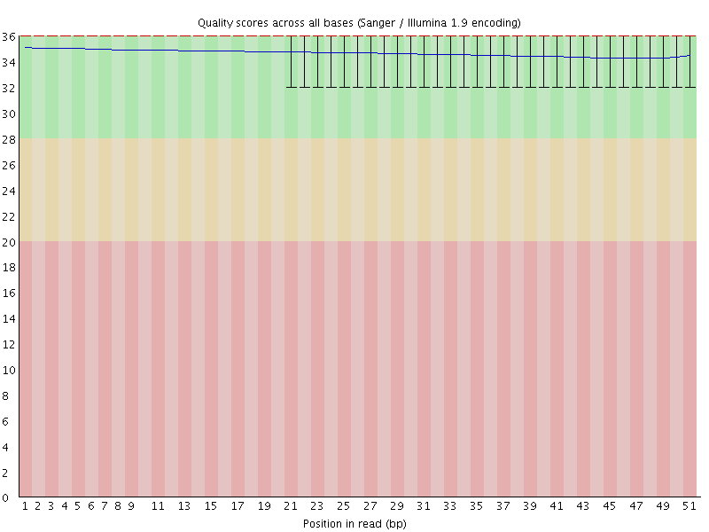
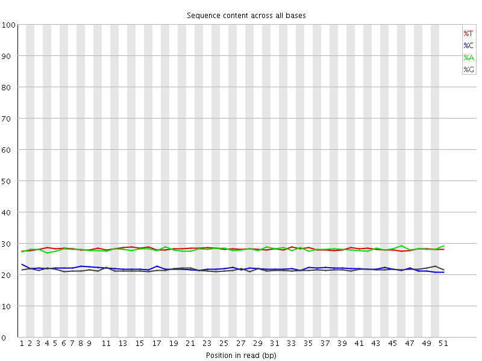
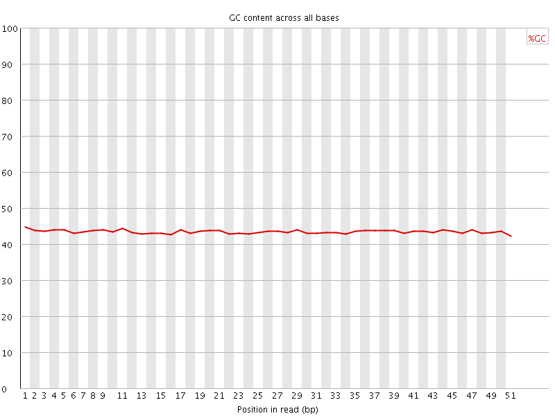
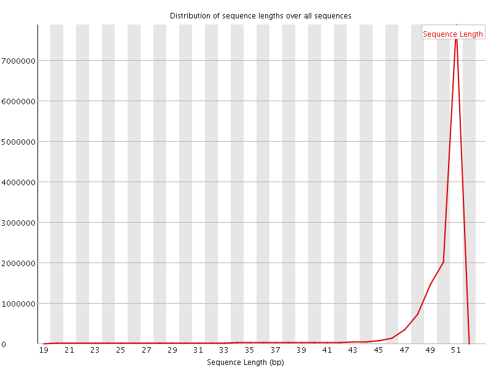

![[OK]](Icons/tick.png) Basic Statistics
Basic Statistics
| Measure | Value |
|---|---|
| Filename | 040-F0_S2_L001_R1_001_trimmed.fq.gz |
| File type | Conventional base calls |
| Encoding | Sanger / Illumina 1.9 |
| Total Sequences | 13441876 |
| Filtered Sequences | 0 |
| Sequence length | 20-51 |
| %GC | 43 |
Per base sequence quality

Per sequence quality scores

Per base sequence content

Per base GC content

![[WARN]](Icons/warning.png) Per sequence GC content
Per sequence GC content

Per base N content

Sequence Length Distribution

Sequence Duplication Levels

Overrepresented sequences
No overrepresented sequences
Kmer Content

| Sequence | Count | Obs/Exp Overall | Obs/Exp Max | Max Obs/Exp Position |
|---|---|---|---|---|
| AAAAA | 4406700 | 4.0936465 | 4.9957833 | 47 |
| TTTTT | 4400430 | 3.9951665 | 5.739184 | 13 |
| GAAAA | 2532855 | 3.067851 | 7.268154 | 4 |
| TTTTC | 2604950 | 3.0410054 | 5.5759177 | 4 |
| AGAAA | 2499145 | 3.0270207 | 6.755145 | 28 |
| CCAGG | 1143560 | 2.9585803 | 5.162691 | 35 |
| GGAAA | 1490430 | 2.3537626 | 7.155288 | 20 |
| GAGAA | 1477850 | 2.3338957 | 7.3622885 | 27 |
| AAAAT | 2422425 | 2.24004 | 5.1531086 | 22 |
| CCACC | 867515 | 2.16282 | 5.4207597 | 8 |
| TGGAA | 1340780 | 2.1077406 | 5.158267 | 19 |
| TGAAA | 1655430 | 1.9959213 | 5.7363815 | 10 |
| CTGAA | 1270410 | 1.9604831 | 6.6649404 | 9 |
| AAATG | 1582970 | 1.9085574 | 5.7979054 | 23 |
| CATTT | 1588000 | 1.8623432 | 5.632336 | 1 |
| AAAAC | 1520995 | 1.8084699 | 5.453526 | 5 |
| GTGGA | 838710 | 1.71909 | 5.113754 | 47 |
| TGAGA | 1083035 | 1.702559 | 6.645838 | 26 |
| CATGG | 782490 | 1.5744361 | 5.503992 | 17 |
| AATGA | 1210605 | 1.4596038 | 5.290251 | 24 |
| ATGAG | 887160 | 1.3946382 | 6.3043265 | 25 |
| CTTGA | 907605 | 1.3941985 | 5.4572396 | 47 |
| CACTT | 915585 | 1.3806576 | 5.5903354 | 37 |
| AACTG | 893975 | 1.3795726 | 5.9502735 | 7 |
| ACTGA | 883220 | 1.3629756 | 5.95684 | 8 |
| AAATC | 1094420 | 1.295317 | 5.100514 | 13 |